Before correction left; approved native-solved front-entry candidate right. Actual unchanged USDZ geometry and exact stored route caches, transformed by each canonical pose. Each pair shares scale and centers on the body. Detail views show the board and nearby cord; full views retain the complete fixed-support lead. Native z-buffer front/side/top projections with true occlusion; these are technical views, not app screenshots. The terminal remains at the actual front floor opening. No unseen connection is inferred.
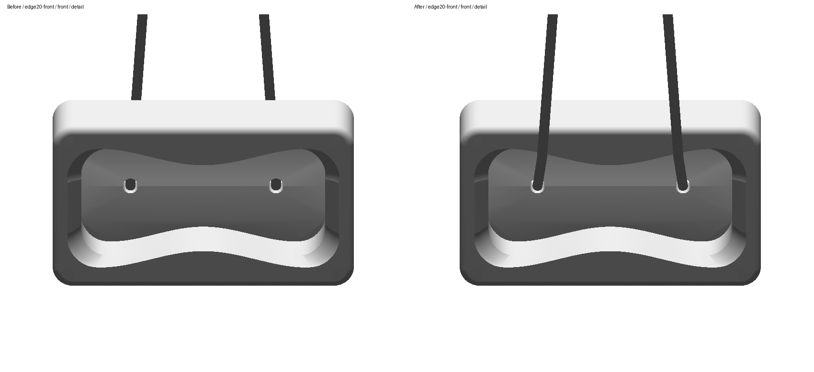
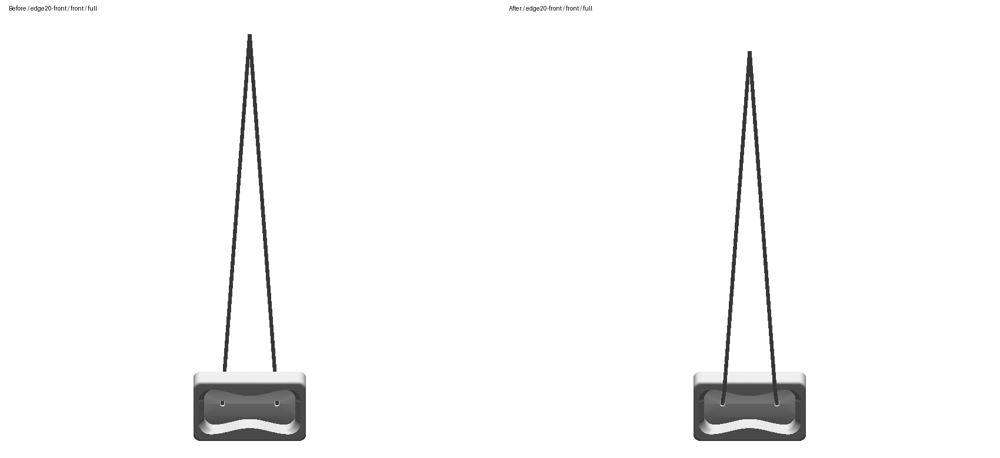
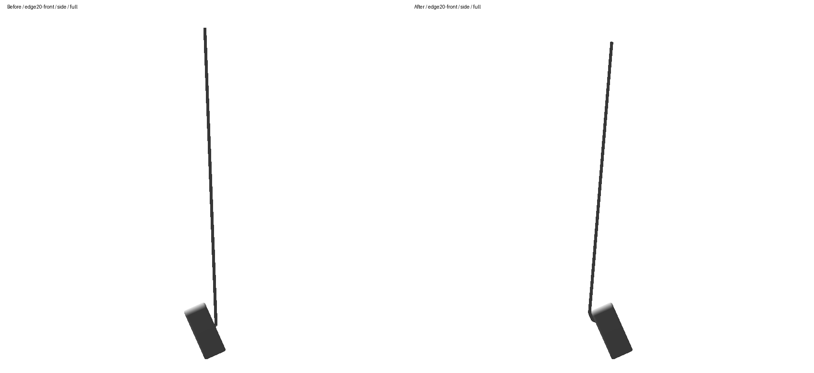
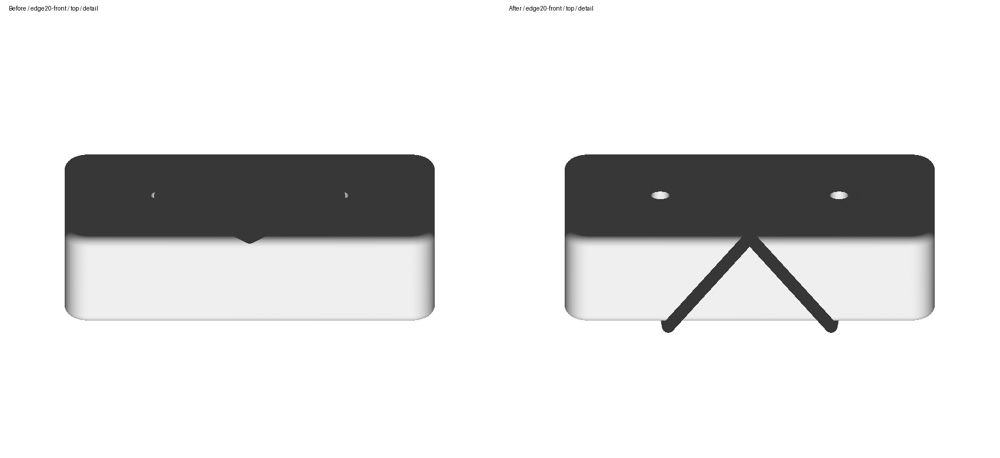
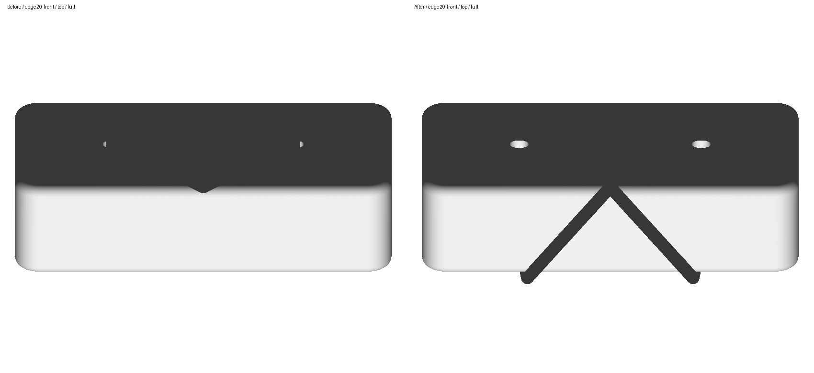
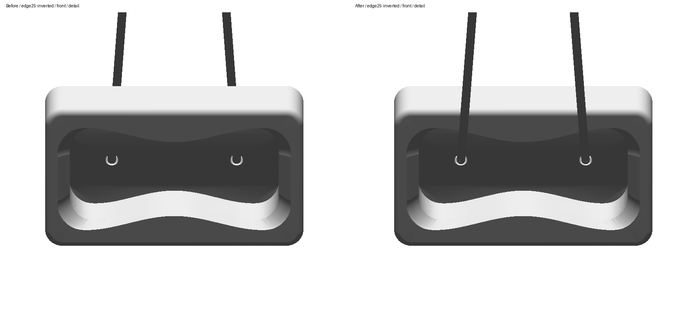
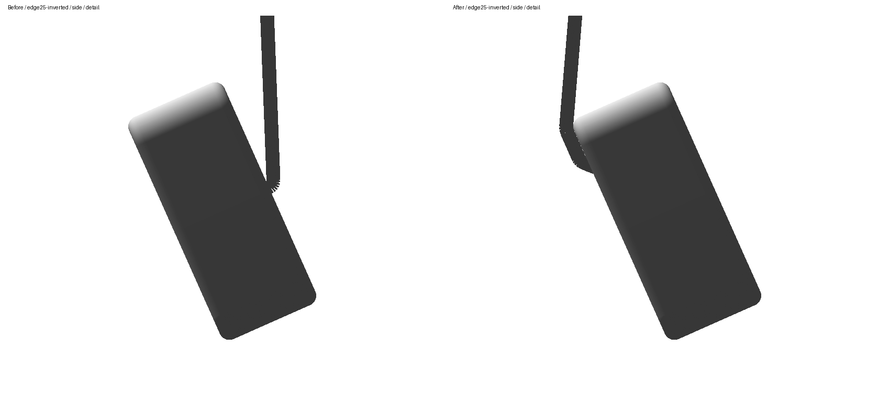
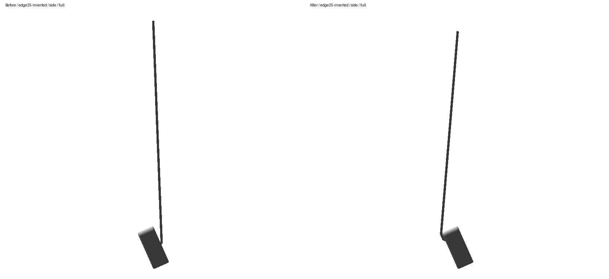
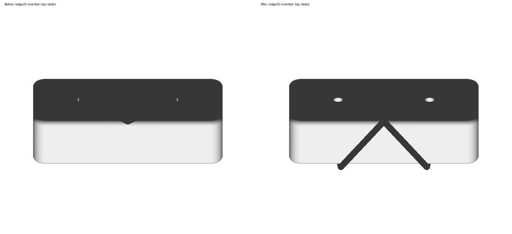
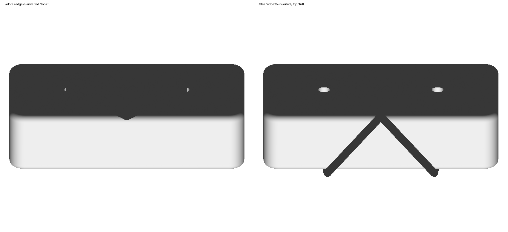
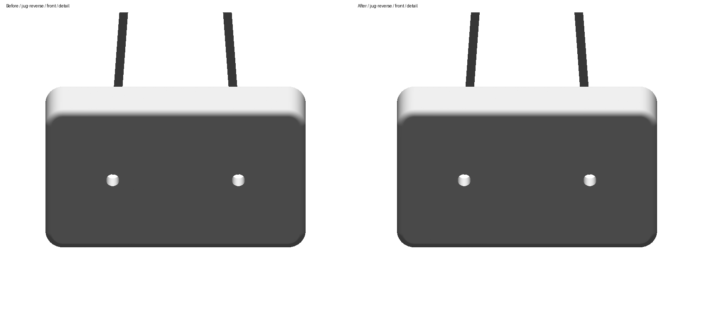
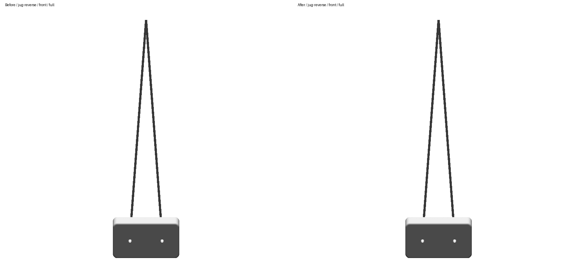
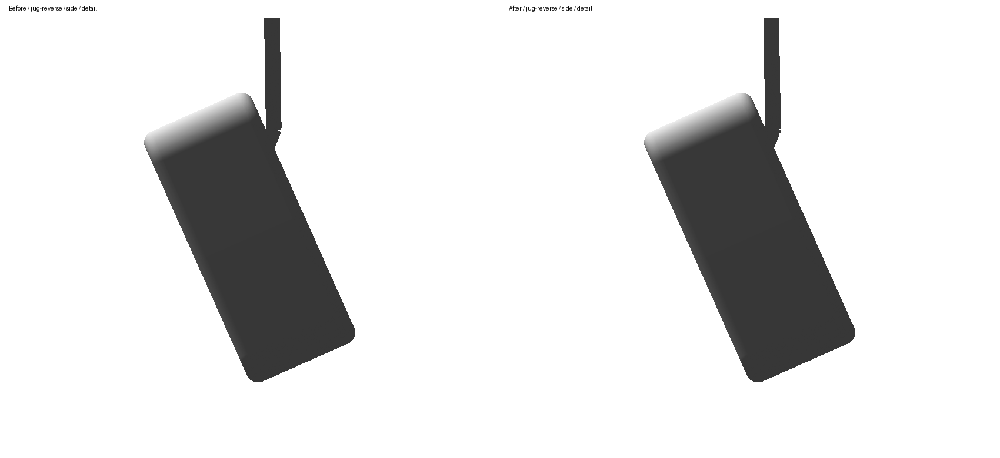
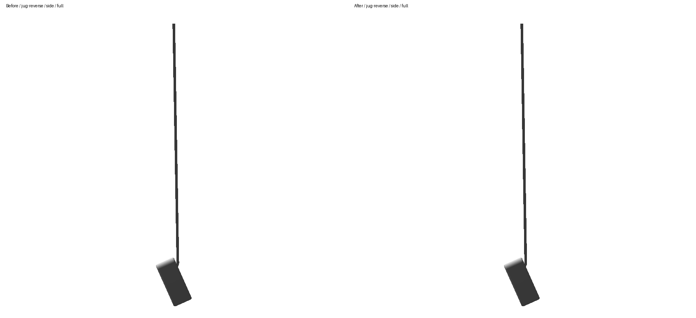
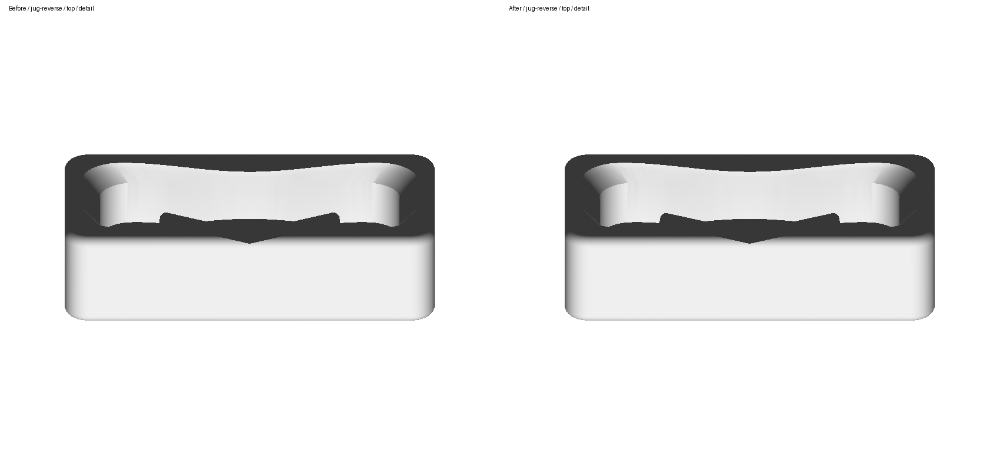
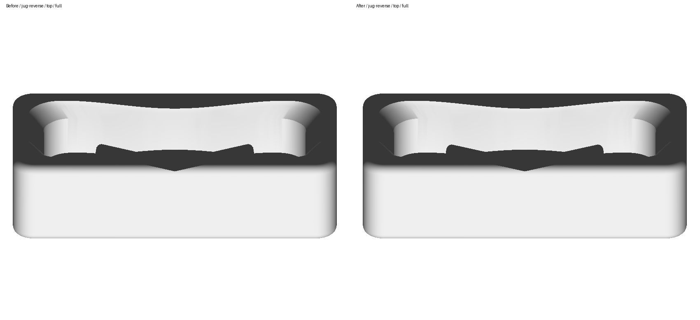
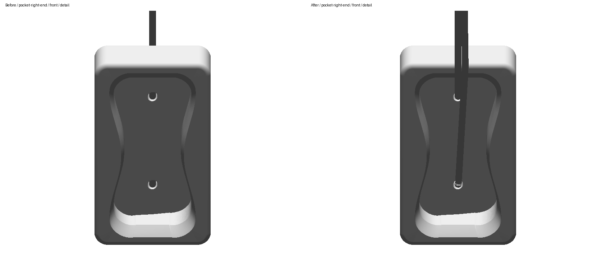
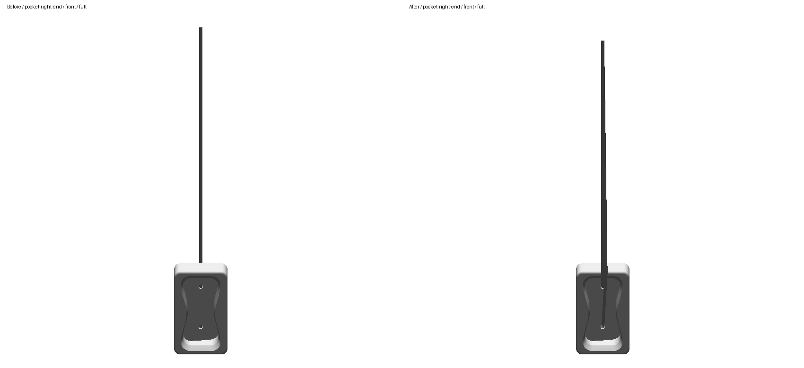
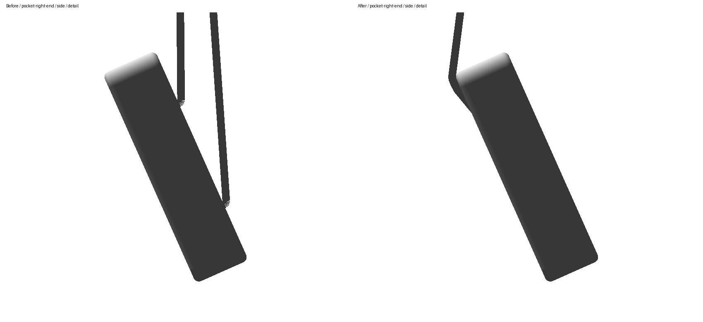
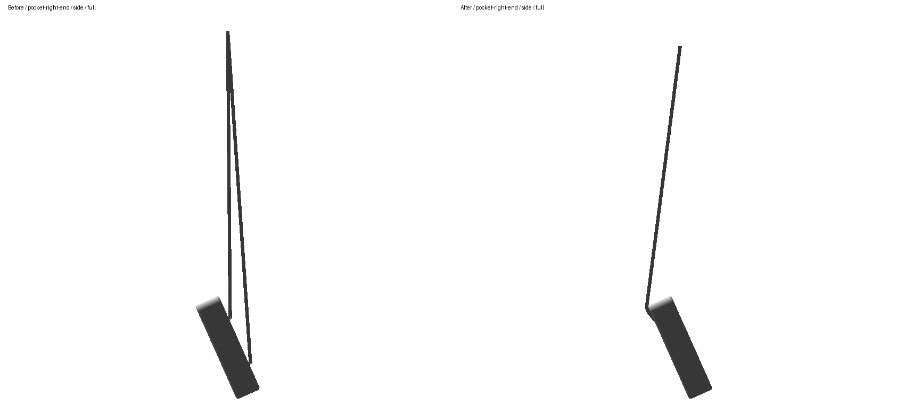
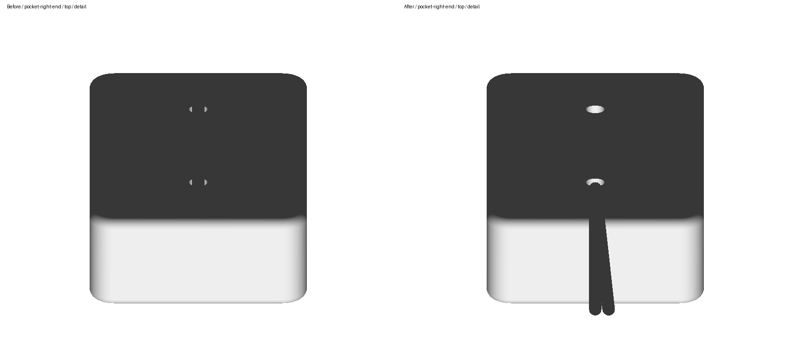
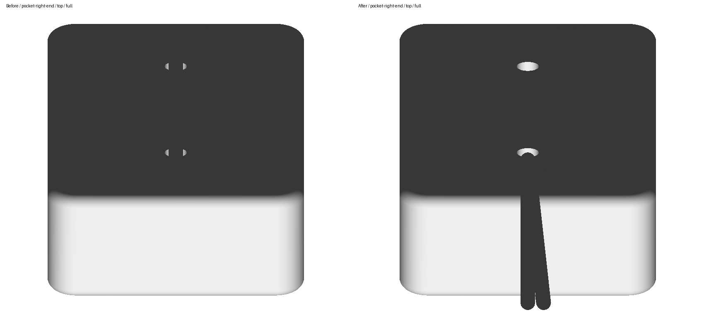
Review notes and best default/90° views · Render provenance · Inspection report · Immutable before snapshot